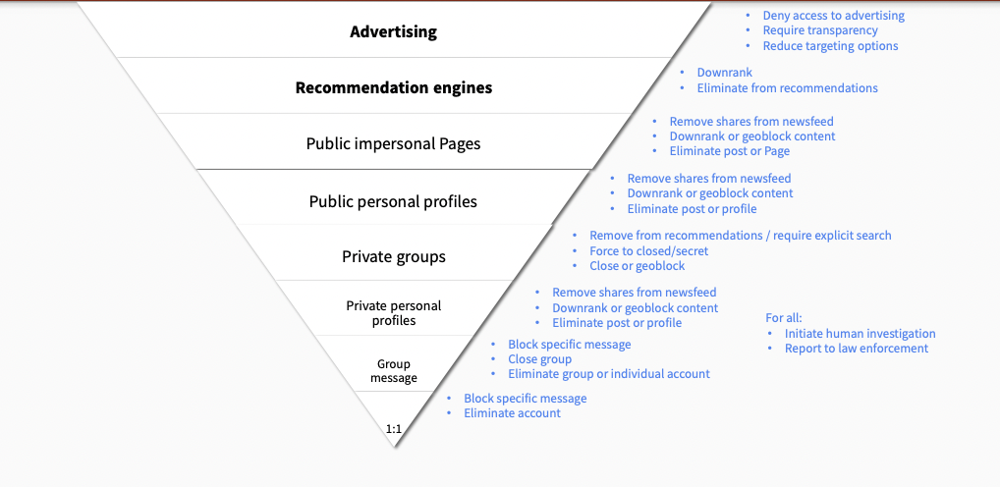

Trust and Safety Engineering
Introduction
Trust and Safety Engineering is kinda like “predicting the wind” when building a bridge. By and large, the winds are very predictable.
Infosec problems, in increasing order:
New research
Old App Vulnerabilities
Simple Config Errors
Patching
People use the same passwords.
The biggest challenges in Trust and Safety
- Scale
Need a large enough system to study - Non-diverse studies and solutions
West overrepresented, English language overrepresented - Measurememnt and definition challenges
“How to define / measure abuse?” turns out to be a tough question
Designing for Trust and Safety
Without proper measurement, abuse fighting is shooting in the dark.
Want to:
Evaluate the size of the badness.
In almost every platform, the biggest form of abuse is spam. Is it the worst thing? No– just the largest thing.
Evaluate the efficiency of badness fighting.
How much am I catching? how much am I missing?
Evaluate the impact of the badness.
Badness leads to poor experience, lowers user trust, and in some cases leads to user harm.
Internal Measurement: user reports
External: Crawling and scraping, crowdsourcing, metrics, UX studies
Measurement
“Two basic principles of management, and regulation, and life, are:
You get what you measure.
The thing that you measure will get gamed.” - Matt Levine, Bloomberg
Metric perversity: optimizing a metric ends up being “perverse,” i.e. optimizing for time spent works really well– but that doesn’t mean it’s good for the customer.
Lots of difficult tradeoffs: Free vs. reliable. Neutral moderation vs. trustworthy information. surveillance-resistant vs. No real-world harm. etc.
Fraud and Identity Theft: Binomo scam
People steal identities (accounts, pictures, etc.) of noteworthy/trustworthy people – use it to get people to invest in scams.
Yemi Adewoye
Lagos-based researcher who identified this scam. Had her personal/business Instagram hacked by scam Binomo account.
Nelly Agbogu
Has 200k+ followers, big social media following. Used her face, her brand to get people to invest in scams. Even used her husbands’ picture, children’s picture…yeesh. Internet/scam literacy may be a problem in Nigeria- people easily trust whatever they see. Lots of trust in Nelly = good, scammed = bad.
How can social media companies improve?
- direct line of contact when you get hacked
- strong passwords
Authentication and Identity
Digital Identity Mappings
Organization <=> Infrastructure
FB is tied to FB signup
User <=> Account
The account is tied to me (not someone else)
Account <=> Real Human
The account is tied to a living, breathing human (not always enforced)
Black markets allow for specialization of effort
There are markets for:
- stolen data
- easy-to-use malware
- phishing kits
- hackers for hire
- botnets
Authentication (authn) vs. Authoriztaion (authz)
Authentication is testing whether users are who they claim to be.
Identifier (username) + Challenges (password, forgot your password?, multi-factor auth)
- Forgot your password?
The “forgot your password” is definitely a weak challenge in many cases
Stanford’s “forgot your password”: Last name, SUID, last 4 SSN, birthdate, city of birth. Easy to look up all of these; SSNs are non-random, based on where born / age.
When you’re physically co-located (e.g. at Stanford) should be easy to re-establish identity in “forgot password” situations.
- Multi-factor authentication (MFA)
Google: “verify it’s you”
Assumptions: you have a phone (reasonable), you keep the same phone number (in Africa, other developing countries - not so reasonable)
- Quota: limit the number of password attempts
- Quota Inversion: try “qwerty” on a bunch of different accounts
- Something something hashing passwords.
Authorization is testing what users are and aren’t allowed to access.
Phishing(+ others?) attacks
Unicode homographs: e and е
“Karma score”: detect hijacker in-session
Spam, Fraud, and Cybercrime
Military Romance Scams
Spam
Spam is the primary vehicle for cybercrime - “the original trust and safety problem” - a lot of the structures to deal with other kinds of abuse were initially created for spam.
Almost always financially motivated.
“Spanish prisoner fraud” - send me money to bail me out in jail, and I’ll give you some of my fortune
History of Spam
“First” spammers in 70s believed they were doing something good
Spam grew in 80s, peaking at ~90% of mail
Has declined in the last 20 years - email servers have gotten really good at filtering spam
Crypto scams have supercharged the market
It’s never been easier to get massive amounts of money, with no checks and balances.
Reason that DeFi isn’t going to work (according to Alex) - there are too many bad guys. If you have all your money stored under your bed, someone will show up with a gun to your head.
SMTP
Has no sort of encyrption, authentication, etc. by default. People can impersonate stanford.edu addresses really easily because stanford has terrible security.
Surveillance and Censorship
The Net interprets censorship as damage and routes around it.
- Time Magazine, “First Nation in Cyberspace”, Dec. 1993
The Internet is anarchist by design. Lots of the underlying networking technologies–TCP/IP, BGP, etc.–was built in a decentralized way, built to survive attacks to its infrastructure.
That said– in reality the Internet is a physical infrastructure, mostly owned by governments and companies that partner closely with them.
The Arab Spring largely didn’t result in widespread governmental change– the authoritarian governments just got smarter.
Lots of Internet traffic Europe <=> Asia routed through the US. US govt takes advantage of that.
4th Amendment
The right of the people to be secure in their persons, houses, papers, and effects, against unreasonable searches and seizures, shall not be violated, and no Warrants shall issue, but upon probable cause, supported by Oath or affirmation, and particularly describing the place to be searched, and the persons or things to be seized.
In other countries, however, law enforcement have a lot, lot more rights to search and seizure (e.g. India.)
Electronic Communications Privacy Act (ECPA)
Stored Communications Act (SCA): US laws allow a lot more access to metadata than actual content of the messages.
Foreign Intelligence Surveillance Act (FISA)
Passed in response to Cold War stuff– FBI wanted to track down Russian spies in the US. BUT we didn’t want those same permissions used against US citizens.
FISA Amendments Act (FAA): Allows govt to target more groups of people, in order to target more dynamic targets, e.g. Al Qaeda.
Targeted Hacking
NSO Group
Israeli group that does surveillance through malware. Pegasus = spyware, many many phones infected.
Domestic Surveillance
Domestic abusers are a very difficult category of attack to stop: they often have unlimited access to devices, passwords, emails, victim’s social network, knowledge of all password reset questions, financial/physical leverage.
“Legitimate” spyware - Find My, Kidguard, etc. Can be abused
AirTags – pretty easily abused to track people.
Harassment, Bullying, and Threatening Behavior
Brenna Smith
Wrote article refuting Gofundme’s statement that they would ban January 6th-type people. Not a lot of oversight / moderation @ payment systems.
After writing the story, she received far-right Twitter comments, lots of vitriol.
Right-wing media pundits picked it up => death threats, threats to family, etc.
Takeaways:
- speed, anonymity, etc. of social networks enables this type of harassment
- small amount of ring-leaders
Harassment is complicated and adjacent to many other abuses
hate speech, domestic violence, etc.
Tactics
- sealioning - “just asking questions” - antivax people do this
- dogpiling - large mob of people
- swatting
Gamergate
Against Zoe Quinn and other female game designers - coordinated dogpiling attack, doxxing, account hacking, NCII, etc.
Impersonation
Targeting
Journalists
Taylor Dumpson - target of alt-right harassment, “trollstormed,” 8chan, etc. Got legal action, public apologies, etc.
Doxxing
Dissidents – in authoritarian countries, like Russia.
Policy Responses
clear policies for “awful but lawful” content:
“do not threaten, harass, or bully”
“do not repeatedly contact someone in a manner that is […]”
US doesn’t have many laws against hate speech – most is protected under the First Amendment, except when there’s a threat of violence
Reporting flows - the more specificity you put, the more exactly people expect their experience to fit into one of the given categories. Balance that with – we want enough data to use something specific – e.g. pass it through a hate speech classifier.
Part of a back-and-forth between abuse reporters and platform – evolves over time
Public block can egg the person on even more
User karma – how many people have blocked? how often contacting strangers?
Relationship between sender and receiver
Instagram “rethink” feature
Hate Speech and Incitement to Violence
Taxonomy
Hate vs. hateful
Hateful vs. cyberharassment
Dangerous vs. hate
Undesirable vs. hate
Extremism vs. hateful
Legal parameters of hate speech
US: no legal definition of hate speech. Most hate speech is protected under the First Amendment
Other countries: detailed policies that limit hate speech.
International treaties: shows you things that absolutely should be protected, things that MAY be restricted, and things that MUST be restricted
Social media environment
Cycle between message boards, content hosting sites, funding sites, etc…
Hate speech is a key component to ethnic violence and genocide
The eight stages of genocide:
- classification
- symbolization
- dehumanization
- organization
- polarization
- prepraration
- extermination
- denial
Myanmar
Example: Myanmar - Rohingya genocide. Early on, Rohingya Muslims were represented. Military coup => dominated by Buddhist majority.
Alliance between extremist religious groups and the military to dehumanize Rohingya.
Growth of mobile phones, Facebook was big in Myanmar - Rohingya hate speech proliferated there.
Some of the hate speech is metaphorical
How did Facebook fail in Myanmar?
- unconstrained hypergrowth, i18n
it’s not just adding character sets to the platform – have to consider trust and safety effects. Consider local context of where you’re introducing the platform. - lack of content policy knowledge
- government-sponsored genocide, no legal protections, mass media control
- no employees on the ground
- No AI/ML capability
People hadn’t done NLP w/ Burmese language - Extremely limited content moderation in the relevant languages
- Content moderation from the ethnic “winners”
Differences between types of content
Advertising, recommendation engines, public impersonal, public personal, private groups, private personal, group message
Is it real or ironic? Context is key
“OK” symbol was co-oped by 4chan trolls, said it was a white power symbol
Limits of AI
algorithms are biased against black people
AI has limited “true” understanding - difficult to distinguish post ABOUT hate speech, rather than hate speech itself
Should we preserve hate speech?
- how can researchers stop the spread of something they cannot see?
- what can / should be limitations on research materials?
- what is the role of companies in this dynamic?
Child Sexual Exploitation
Misinformation and Disinformation
Definitions
misinformation: unintentionally inaccurate information
- deliberately false or misleading info
- info with the intent to deceive
political propaganda: information used to promote a particular political cause or point of view (could be misleading, but could be true)
“fake news”: false news stories (not used by researchers anymore)
Motivations
Nation States: to control their citizens, maintain power
Terrorist orgs: control citizens, influence outsiders
Domestic:
Mercenaries: achieve clients’ goals
Spammers: economic
Major state actors
- China
- Russia
- Iran
- US
- Saudi Arabia
Why is misinformation so effective?
- distrust in authority
- media is f***ed up: INCLUDING mainstream (e.g. NYT)
- media => Iraq War
- media is f***ed up: INCLUDING mainstream (e.g. NYT)
- amateur participation + virality, automation
- zeitgeist no longer decided by ~20 people in control of the media
- upside: Black Lives Matter, MeToo, etc. can exist
- downside: misinformation
- zeitgeist no longer decided by ~20 people in control of the media
- cross-platform spread
printing press, radio, television: => virality of ideas by organizations
social media: => virality of ideas by individual people.
Steve Bannon: ideologue. Has a huge following, even with no editorial standards.
all of us are open to propaganda
Gov-sponsored disinfo in Cameroon
Real is Fake: convince people that a killing video is “fake news”
Fake is Real: convince people that a human body parts eating video is real
Active Measures - Thomas Rid
KGB operation - took advantage of real passions and hatreds - used anti-Semitism in Germany, to drive hate.
Social media’s role
Twitter trending - easy to manipulate
Policy responses
(policy for mis/disinfo is very difficult)
- increase transparency
- share research about misinfo
- “immune system”: fact-checking, media literacy, funding
- inform legislation
Do you punish the actor or content?
Actor:
- no terrorist
- you can’t lie about who you are
Content:
- some things are true or false, but we don’t know the truth value yet: e.g. COVID
CISA
✅ Fact: []
❌ Rumor: []
Product/technical responses
reduce velocity/virality through “friction”
reduce financial incentives for disinfo
label potential mis/disinfo
treat influencers differently
machine learning classifiers
Are labels effective?
…meh. Not super effective.
Also - unlabeled things are implied to be true / implied that everything is fact-checked. (Not true.)
Have to think about the Amplification / Free expression pyramid
Amplification / Free expression pyramid

Links to this node
Trust and Safety Engineering
Amplification / Free expression pyramid